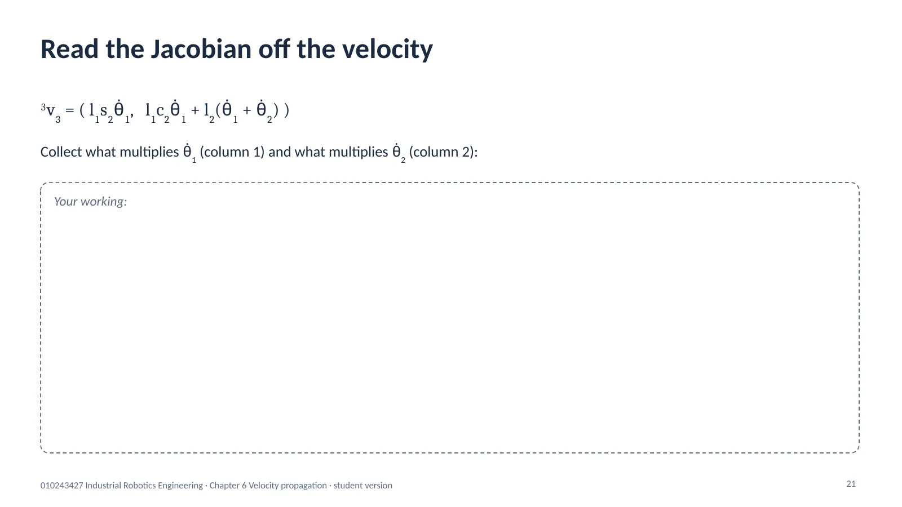
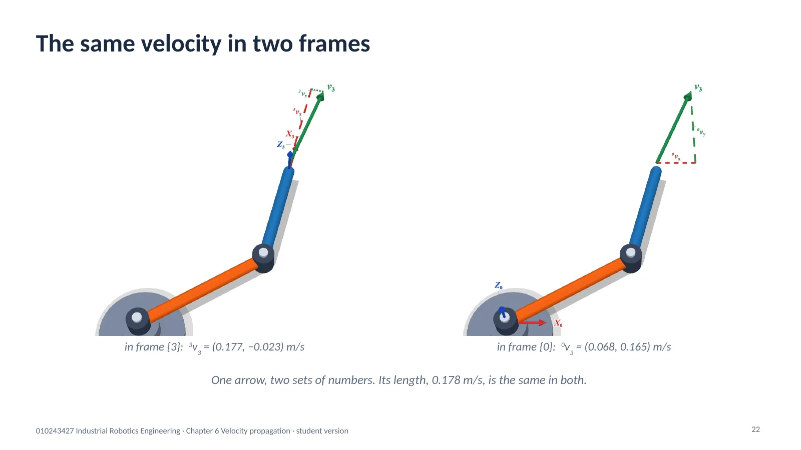
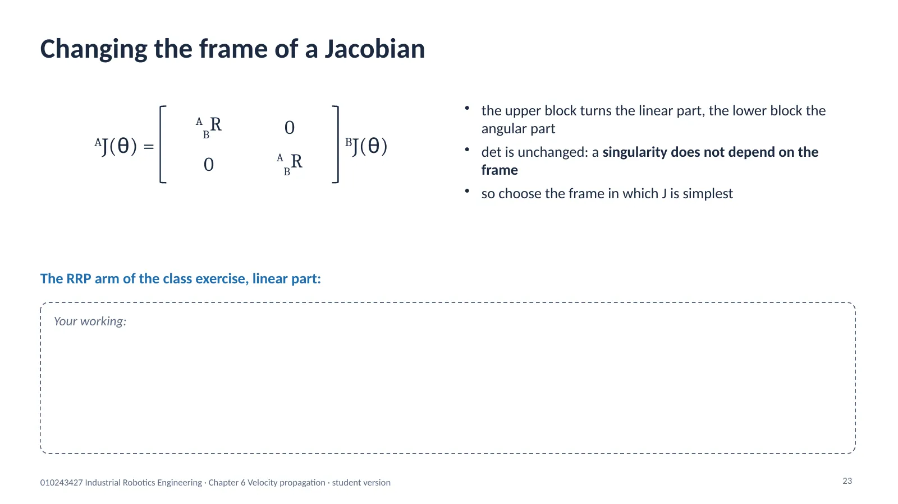
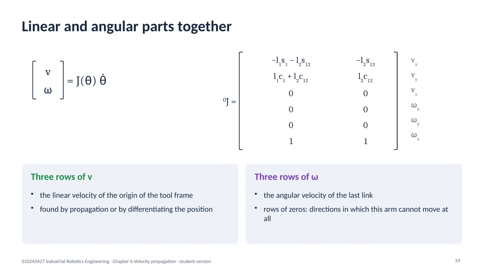

หน้า 6.2 ส่งต่อความเร็วจากฐานไปจนถึงปลายแขน ความเร็วที่ได้เป็นเชิงเส้นในอัตราของข้อต่อ (ไม่มี θ̇ คูณกันเอง) จึงอ่านจาโคเบียนจากสมการความเร็วได้ทันทีโดยไม่ต้องหาอนุพันธ์: สิ่งที่คูณอยู่กับ θ̇₁ คือคอลัมน์ 1 สิ่งที่คูณอยู่กับ θ̇₂ คือคอลัมน์ 2 เมื่อเขียนในเฟรมของปลายแขน {3} จะได้ \({}^3J\) ซึ่งมักง่ายกว่า \({}^0J\) ที่เขียนในเฟรมฐาน {0} มาก ทั้งสองบอกลูกศรความเร็วอันเดียวกัน ต่างกันเพียงแกนที่ใช้อ่านตัวเลข และเปลี่ยนจากเฟรมหนึ่งไปอีกเฟรมหนึ่งได้ด้วยเมทริกซ์การหมุน ดีเทอร์มิแนนต์ของจาโคเบียน (determinant เขียนย่อว่า det) จึงไม่ขึ้นกับเฟรม และภาวะเอกฐาน (singularity) ก็ไม่ขึ้นกับเฟรมเช่นกัน หน้านี้ครอบคลุมสไลด์บทที่ 6 หน้า 21–24 มี 4 โจทย์
Page 6.2 passed the velocity on from the base to the tool. The velocity it gives is linear in the joint rates (no rate multiplies another), so the Jacobian can be read straight off it, with no differentiation: what multiplies θ̇₁ is column 1, what multiplies θ̇₂ is column 2. Written in the tool frame {3} this gives \({}^3J\), often much simpler than \({}^0J\) written in the base frame {0}. Both describe the same velocity arrow; only the axes the numbers are read along differ, and a rotation matrix takes one into the other. The determinant of the Jacobian (det) therefore does not depend on the frame, and neither do the singularities. This page covers chapter 6 slides pp. 21–24, with 4 problems.


(ก) แขนสองก้านของโจทย์ 1 ที่ θ = (30°, 45°): หา det ของ ³J และ det ของ ⁰J (ใช้ตัวเลขของเมทริกซ์ทั้งสองจากโจทย์ 1)
(a) The two-link arm of problem 1 at θ = (30°, 45°): find the det of ³J and the det of ⁰J (with the numbers of the two matrices from problem 1).
(ข) ภาวะเอกฐานของแขนขึ้นกับเฟรมที่ใช้เขียนจาโคเบียนหรือไม่
(b) Does a singularity of an arm depend on the frame its Jacobian is written in?
(ค) แขน RRP ที่ q = (35°, 25°, 0.4 m): อ่าน \({}^3J_v\) (ส่วนเชิงเส้น ขนาด 3 × 3) จาก \({}^3v_3\) ข้างบน แล้วหา det ของมัน
(c) The RRP arm at q = (35°, 25°, 0.4 m): read \({}^3J_v\) (the linear part, 3 × 3) off the \({}^3v_3\) above, then find its det.

(ก) แถวใดของ ⁰J เป็นศูนย์ทั้งแถว ไม่ว่าแขนจะอยู่ที่ท่าไหน
(a) Which rows of ⁰J are all zero, whatever the pose of the arm?
(ข) เมื่อ θ̇ = (0.5, −1.0) rad/s ก้านที่ 2 มีความเร็วเชิงมุมรอบแกน Z เท่าไร
(b) With θ̇ = (0.5, −1.0) rad/s, what is the angular velocity of link 2 about Z?